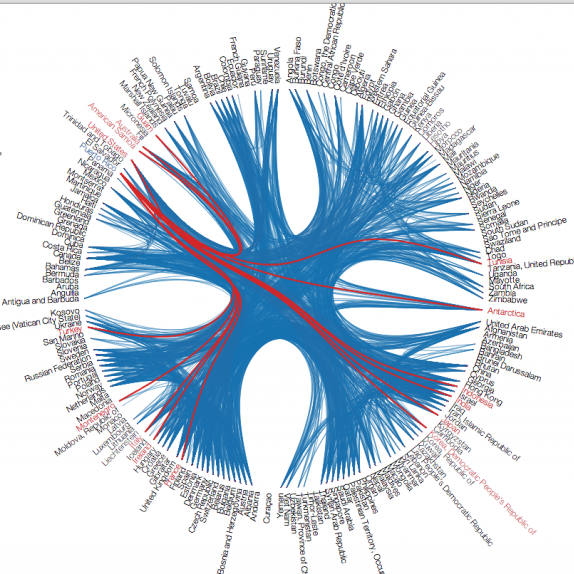

Empathetic Dining - Restaurant Dashboard
Diner Details
Diner Sentiments By Menu
Select Menu Category:
Configuration Parameters
Width:
Height:
Levels:
Padding Scale:
Label Scale:
Facet Plot
Levels
Axes
Vertices
Polygons
Legend
Levels Labels
Axes Labels
Background Music in Private Rooms
Analytics Insights

Maximize Diners' Experience
Adjustive ambient
Temperature
Humidity
Brightness
Music
Menu Recommendation
Entree Association
Order of Courses
Personalized Fortune Cookie
Advisory Services
Cross-Restaurant Recommendation
Site Selection
Interior Decoration